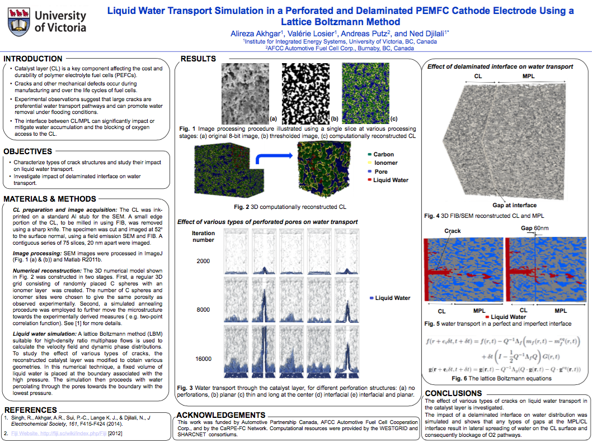
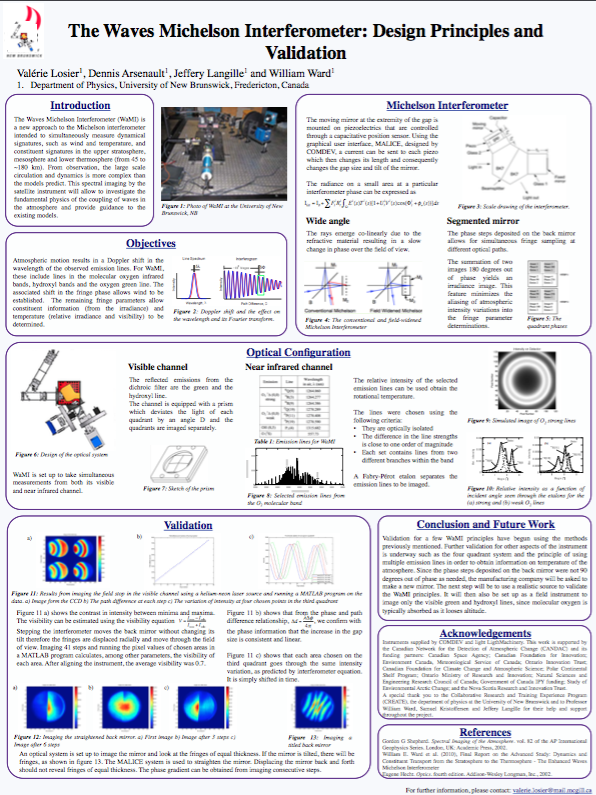

Liquid water transport in PEM fuel cells
University of Victoria, 2015 - 2017


At the University of Victoria, I study liquid transport phenomena in polymer electrolyte membranes fuel cells (PEMFC). Below is a short clip of my supervisor, Professor Ned Djilali, giving an overview of the work being done in the Energy Systems and Transport Phenomena lab (ESTP) .
Within this research group, I study the effect of interfacial cracks and delaminations in the cathode of PEMFC, particularly on liquid water transport. My project involves numerical modeling of porous materials in the cathode - the catalyst layer and the microporous layer. For the unaquainted, this may seem like a mouthfull, so please allow me to guide you through a brief introduction and motivation.
Fuel cells convert the chemical energy from their fuel into electricity. Polymer electrolyte membrane fuel cells (PEMFC) use hydrogen as fuel, thus the reaction is completed with zero emission. These devices are a viable solution to reducing the use of fossil fuels in the transportation industry, a prominent contributor to the current carbon crisis. PEMFC are used in portable applications and in transportation. Some successful applications have been in the Toyota Mirai, the fuel cell buses used at the 2010 Winter Olympics in Vancouver, and more.
Figure 1: Schematic of a PEMFC. Image by By Mattuci (Own work) [CC0], via Wikimedia Commons.
Figure 2: Schematic of the mass transport in the cathode. The three layers shown are from left to right: the polymer electrolyte membrane, the catalyst layer, the gas diffusion layer. Image by Lange et al. (2011) [1]
.As illustrated in figure 1, at the anode of the PEMFC, the hydrogen splits into protons and electrons, and the electrons pass through an external circuit where the electrical energy is provided. The protons and electrons are recombined with oxygen at the catalyst layer of the cathode and clean water is produced as a result of the chemical reaction. The chemical reaction and species transport in the catalyst layer is outlined in figure 2. Electrons travel through the carbon spheres, protons travel through the ionomer, and the gases, oxygen and water vapour, diffuse through the pores and ionomer. The efficiency of the device depends on the transport of gases and water through the porous layers of the fuel cell.
The fuel cell should be sufficiently hydrated to avoid dryout and the polymer electrolyte membrane must be hydrated to attain high proton conductivity. However liquid water generated at the cathode can accumulate in the porous layers of the cathode and block access to reaction sites which reduces the amount of gas mixing. Excessive water in the porous layers, known as flooding, limits the electrochemical activity in the catalyst layer, therefore the removal of liquid water in the porous layers is essential to achieve optimal fuel cell performance.
Substantial advances in water management have been made by including a microporous layer (MPL) [2] and increasing the hydrophobicity of the porous layers [3].
Cracks occur naturally through the manufacturing process [4] as well as during the operating cycles of the fuel cell due to the swelling and contracting of the porous layers [5]. Studies on interfacial effects between the catalyst layer, the MPL and the gas diffusion layer (GDL) demonstrated that interfacial cracks play an important role in mass transport processes and liquid water distribution in the cathode [6].
The effect of various interfacial crack structres on liquid water transport in the cathode is studied numerically. The catalyst layer is reconstructed, then perforations of various structural geometries are introduced numerically in order to simulate gas and liquid water transport through the porous layers using a three-dimensional, two-phase lattice Boltzmann method (LBM). The LBM, which solves the discrete Boltzmann equation, is the method of choice due to its ability to simulate multiphase flows. The model uses a multiple relaxation time collision operator and is based on the diffuse interface theory [7].
Some crack stuctures are conducive to effective water management, while others have the opposite effect. This study aims to characterize interfacial cracks and their impact on liquid water transport and fuel cell performance
References
[1] K. Lange, P. Sui, and N. Djilali. Pore scale modeling of a proton exchange membrane fuel cell catalist layer: Effects of water vapor and temperature. Journal of Power Sources, 196:3195-3203, 2011.
[2] J. H. Nam, K-J. Lee, G-S. Hwang, C-J. Kim, and M. Kaviany. Microporous layer for water morphology control in PEMFC. International Journal of Heat and Mass Transfer, 52(1112):2779-2791, 2009.
[3] K. N. Kim, J. H. Kang, S. G Lee, and J. H. Nam. Lattice boltzmann simulation of liquid water transport in microporous and gas diffusion layers of polymer electrolyte membrane fuel cells. Journal of Power Sources, 278:703-717, 2015.
[4] F. Mack, M. Klages, J. Scholta, L. Jrissen, T. Morawietz, R. Hiesgen, D. Kramer, and R. Zeis. Morphology studies on high-temperature polymer electrolyte membrane fuel cell electrodes. Journal of Power Sources, 255:431-438, 2014.
[5] R. Banan, A. Bazylak, and J. Zu. Combined effects of environmental vibrations and hygrothermal fatigue on mechanical damage in pem fuel cells. International Journal of Hydrogen Energy, 40(4):1911-1922, 2015.
[6] M. P. Manahan, S. Kim, E. C. Kumbur, and M. M. Mench. Effects of surface irregularities and interfacial cracks on polymer electrolyte fuel cell performance. ECS Transactions, 25(1):1745-1754, 2009.
[7] X-D. Niu, T. Munekata, S-A. Hyodo, and K. Suga. An investigation of water-gas transport processes in the gas diffusion layer of a PEM fuel cell by a multiphase multiple-relaxation-time lattice boltzmann model. Journal of Power Sources, 172(2):542-552, 2007.
Links:
Energy Systems and Transport Phenomena Lab
Institute for Integrated Energy Systems
Professor Ned Djilali
CaRPE-FC 2016 meeting poster 
Undergraduate projects
Microwave breast cancer detection, McGill University
Modelling atmospheric sensitivity to land ocean interaction, McGill University
Waves Michelson Interferometer, University of New Brunswick
Microwave breast cancer detection
McGill University, 2015
In 2015 I was involved in research with the Computational Electromagnetic Group within the department of Electrical and Computer Engineering at McGill. Within this group I focused on microwave breast tumour detection, a technique which considers the contrast in the dielectric properties of healthy tissues and malignant tissues and is implemented with a multistatic radar using time-domain techniques for breast imaging that reconstructs a map of electromagnetic scattering within the breast. The system operates at low power microwaves, which allow for monthly testing with minimal damage to the tissues.
I contributed to the design of a second-generation clinical prototype where the integrated circuitry and the antenna array are built into a flexible, compact and inexpensive design that can be customized for different body shapes and dimensions so that women can test themselves at home monthly.
Links:
McGill Daily article, This month in student research: Valérie Losier
Breast Cancer Detection Research Group
Modelling atmospheric sensitivity to land ocean interaction
McGill University, 2013-2015
In September of 2013, I became involved in theoretical research and computationally intensive analysis in McGill's Department of Atmospheric and Oceanic Sciences. After a successful academic year, I received the Science Undergraduate Research Award to continue my work throughout the summer of 2014. My research focused on climate dynamics and response. I constructed a numerical energy balance model to simulate the energy transfer in land-ocean interaction under various greenhouse gas concentrations and continent geometries. The results unveiled the importance of humidity in the energy transport mechanism, and encouraged me to explore relevant theoretical topics in order to understand the observed behaviours of the simulations.
I contributed to the design of a second-generation clinical prototype where the integrated circuitry and the antenna array are built into a flexible, compact and inexpensive design that can be customized for different body shapes and dimensions so that women can test themselves at home monthly.
Links:
Professor Timothy Merlis
McGill Undergraduate Research Conference 2014 - Top Stutent Researchers
Waves Michelson Interferometer
Univeristy of New Brunswick, 2013

In the summer of 2013 I was the recipient of the NSERC CREATE award, which funded my experimental research in the Department of Physics at the University of New Brunswick, where I contributed to the development of the Waves Michelson Interferometer (WaMI) satellite. WaMI is a field widened Michelson interferometer intended to simultaneously measure from both its visible and near infrared channels to evaluate dynamic signatures of the atmosphere. My projects included constructing and calibrating the optical system of the prototype satellite, developing software to test and validate the principles of the instrument, and designing and implementing an electronic circuit system and program to automate a filter wheel, which enables the WaMI to collect only desirable wavelengths of electromagnetic waves.
Links:
Professor William Ward
NSERC CREATE Arctic Training Program 2013 conference poster 